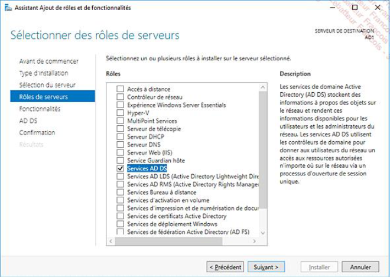

Julien RIBARDIERE
- Age: 27 ans
- Localisation: CAEN, Calvados
- Formation en cours: BUT Réseaux et Télécommunication
- Mail: julien.ribardiere14@gmail.com

L'objectif de ce projet consite à acquerir une compréhsenion des composants des annuaires Microsoft (Active Directory et Azure Active Directory) et des bonnes pratiques et contre-mesures à mettre en place. De plus, la doucmentation de windows fournis dans le cadre de ce projet permet d'aborder les pratiques de gestion recommandées pour administrer des identités hybrides et Cloud de façon sécurisée, ainsi que les avantages et les alternatives à l'utilisation d'un mot de passe pour authentifier une identité.
Assister l'administrateur du réseau
• Comprendre l'architecture et les fondements des systèmes numériques, les principes du codage de l'information, des communications et de l'internet
• Configurer les fonctions de base du réseau local
• Identifier les dysfonctionnements du réseau local et savoir les signaler
• Installer un poste client, expliquer la procédure mise en place
Dans le cadre de ce projet, j'ai pu mettre en place un controleur de domaine Active Directory sur Windows Serveur (une VM installé dans un serveur PROXMOX) ainsi que la créaation du'une Unité d'Organisation (OU) pour la gestion des utilisateurs et des groupes. J'ai également configuré les stratégies de groupe (GPO) pour appliquer des paramètres de sécurité et de configuration aux utilisateurs et aux ordinateurs du domaine.
Voici actuellement les resultats obtenus concernant le projet:

Bien qu'ayant compris le principe et le fonctionnement de Active Directory ainsi que son déployement, il faudrait que j'approfondisse mes connaissances sur les stratégies de groupe (GPO) et la gestion des utilisateurs et des groupes dans un environnement Active Directory.
Faire cette action quand j'aurais l'opportunité de le faire dans un environnement réel, me permettra de moins etre dépendants des notices sur ces configurations et de mieux comprendre les implications de chaque paramètre.